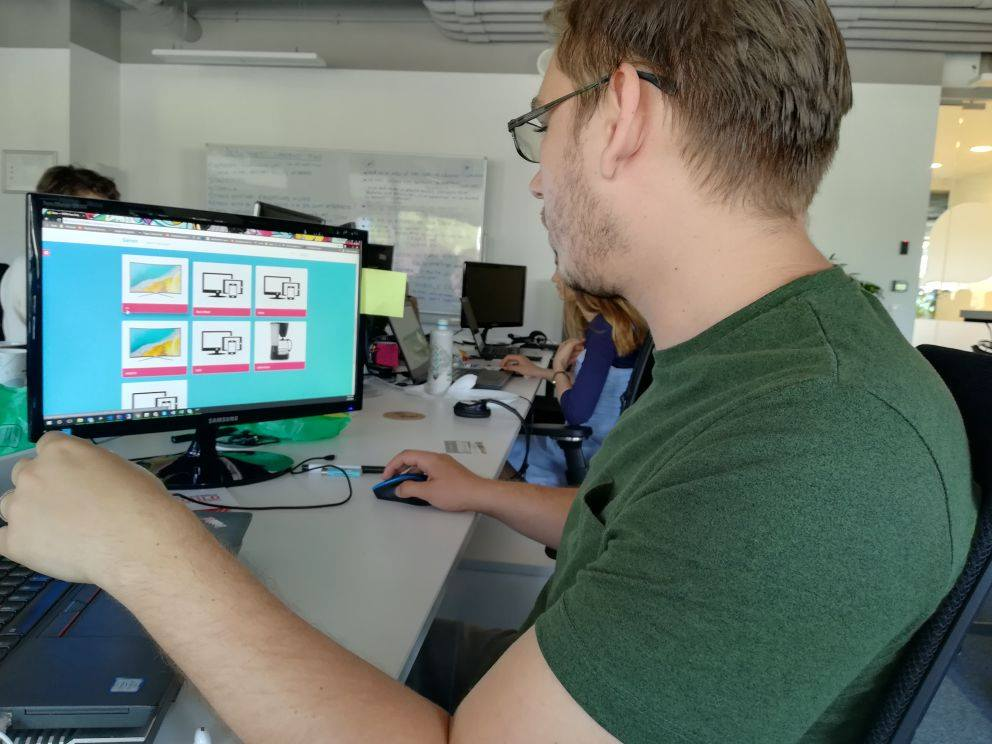

Test Plan for: Geron App
Persona Type Tested: Primary
Context: Home
Duration: 5 minutes
User consent: User 1 Content
User Background Information: User 1 Background Information
Overall Objectives
An user wants to activate a tv from home.
- Assess the overall effectiveness of the Geron for different types of users performing basic, common tasks;
- Identify obstacles to completing a certain task or using a certain component;
- Evaluate consistency and standards;
- Use the References to guide you in writing your objectives.
Scenario
An user wants to open his personal tv.
Tasks
- Open the application on the laptop in browser - 20 sec;
- Speak to the application to turn on tv - 25 sec;
- enjoy watching tvunspecified;
A user might complete a task in a shorter or greater time than the estimated time. If the completion time exceeds the estimated time then it there is a problem. Also a user might skip the current task thus the completion time would be 0.
Post-test Questions
These questions could be presented to the user as a questionnaire or verbally asked.
- The vocal command was interpreted according to user expectation?
- Is the tv turned on?
- Interaction with the app was a pleasent experience?
Notes for Test Coordinator
- Remind the user that you would like them to 'think aloud' so that you can understand what they are thinking, about the task or the product/application;
- Read the user the scenario for the test;
- Read the user the tasks he has to complete. If the tasks are complex, you may want to put a sheet of paper in front of the user with each task written out;
- Record the user's actions, comments, questions, and body language (write them in the Test Observations section accompanied by video/audio).
- Don't offer help; let the user attempt to perform the task. If they ask for help reply with: "What do you think you/that would do?" "What do you think that means?".
References
- Fluid User Testing;
- usability.gov Templates;
- Handbook of Usability Testing by Jeffrey Rubin;
- A Practical Guide to Usability Testing by Joseph S. Dumas and Janice C. Redish.
Other Notes
